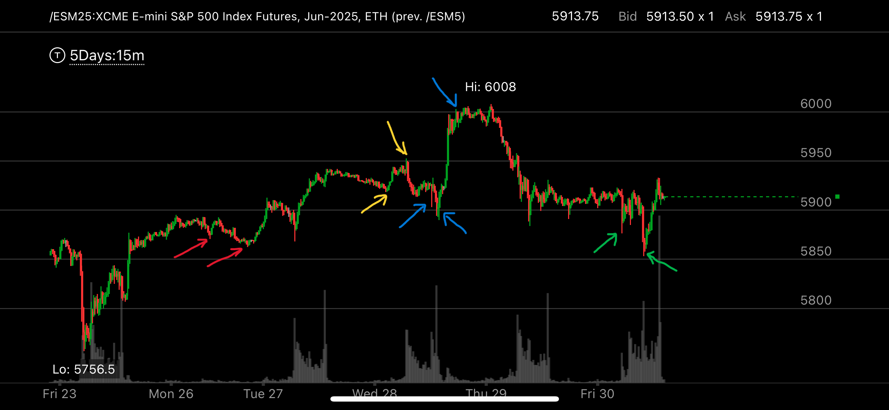

上涨过程中，出现了向上加速，但是用相对弱势来化解
- 上涨过程中，出现了加速上涨，但是其实并没有反转，这时，大盘会用相对弱势来化解
- 这个时候，要能够分辨这个相对弱势，然后做多，或者平仓原来想要的做空头寸

图示:
- 红色箭头，是一个相对弱势，前面上涨过快，这个相对弱势则化解了这个走势。
- 黄色箭头，表示出现了加速上涨。但是接下来的蓝色箭头，则出现了相对弱势，化解了这个加速上涨，因为此时并没有到达顶部。要注意，这个
相对弱势很隐蔽， 第一个蓝色箭头，就是下跌后，快速拉回。第二个蓝色箭头，在更低的地方徘徊了一段时间。
- 第二个和第三个蓝色箭头，形成了加速上涨。 这个加速上涨看起来是一个反转的样子。但是，它和前面的新高相比，只是勉强出现了新高。
并没有出现决定性的新高，所以这个不是反转走势。
- 这个走势下来后，只是回调，不是反转。绿色箭头，再次出现了相对弱势。这样，它会继续上涨。